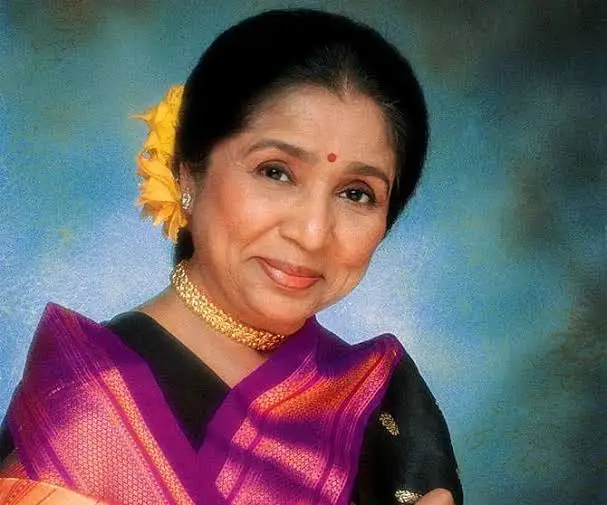

Asha Bhosle
1933 - 2026

Asha Bhosle was an Indian playback singer, businesswoman, actress and television personality who predominantly worked in Indian cinema. Known for her versatility, she was described in the media as one of the greatest and most influential singers in Hindi cinema.
Key Achievements
- Guinness World Record (2011): Acknowledged as the most recorded artist in music history.
- Padma Vibhushan (2008): India’s second-highest civilian honor.
- Grammy Nominations: Became the first Indian singer nominated for a Grammy, for the album Legacy in 1997, and later in 2006 for You've Stolen My Heart.
- International Collaborations: Worked with artists like Kronos Quartet, Boy George, and sampled by Black Eyed Peas.
Learn more about Asha Bhosle's legacy and contributions to Indian music on wikipedia